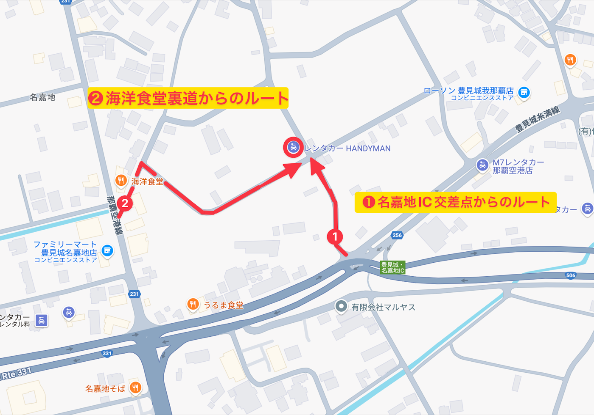
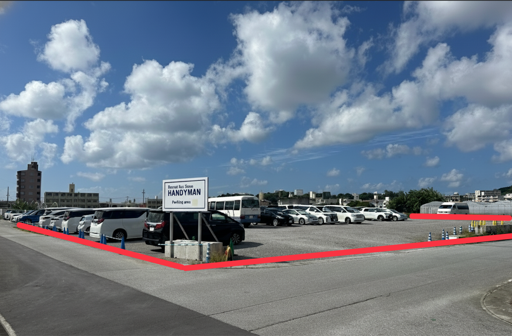

ご利用ガイド
ステップ1：ご予約手続き
予約サイトから、ご予約のお手続きを済ませてください。
- ご希望の日程と車種をお選びください。
- 必要なオプションをお選びください。
- 貸出情報： 貸出の方法・時間・場所をご入力ください。
- 返却情報： 返却の方法・時間・場所をご入力ください。
- 貸渡約款の締結： ご利用規約（約款）の内容にご同意いただきます。
- お支払い： サイト上で事前にお支払いいただきます。
ステップ2：公式LINEの友だち追加
ご予約からご返却までのご連絡やお問い合わせは、原則としてLINEで行っております。
貸出日の3日前19:00までに、公式LINEの友だち追加と受付フォームへのご入力をお済ませください。
- 追加方法：下記のURLまたはID検索から友だち追加してください。
LINE公式👉 https://lin.ee/jMU6xdJ
LINE ID👉 @466dbckq - 受付フォーム(※)の案内に従って、お名前・予約番号・貸出と返却の方法を確認します
【受付フォーム】
https://liff.line.me/2008659810-r8POwlJp?unique_key=T5x3Mc&ts=1765760165
ステップ3：貸出（ご出発の日）
ご予約の際にお選びいただいた方法で、お車をお渡しいたします。
- 無料送迎（空港から営業所へ）
空港と営業所を結ぶ、時刻表どおりに運行するシャトルバスをご利用ください。
時間：那覇空港を毎時00分に出発（運行時間9:00-19:00）
場所：那覇空港 レンタカー送迎バスのりば【11-B】
⚠️定刻になりましたら出発いたします。お時間に余裕をもってお越しください。
- デリバリー（お届け）オプション
あらかじめご指定いただいた時間・場所までお車をお届けします。
時間：9:00-19:00
場所：那覇市・豊見城市内に限ります
⚠️那覇空港は条例によりお受け渡しができません 空港駅から1駅の赤嶺駅でのお受け渡しをご検討ください。
- 直接ご来店（送迎なし）
HANDYMAN第二駐車場まで直接お越しください。
時間：9:00-19:00
場所：HANDYMAN第二駐車場（詳しくはこちら）
⚠️到着予定時刻をあらかじめLINEでお知らせいただくと、お手続きがスムーズに進みます。
ステップ4：受付手続き
- 運転免許証の提示： 現地で、運転なさる方全員分の免許証をお見せください。
- ご注意事項のご説明： レンタル中のルールや、トラブルが起きた際の対応についてご説明します。
ステップ5：ご返却の日
ご予約の際にお選びいただいた方法で、お車をご返却ください。
- 無料送迎（営業所から空港へ）
営業所と空港を結ぶ、時刻表どおりに運行するシャトルバスをご利用ください。
燃料を満タンにしたうえで、出発の10分前までに第二駐車場へお越しください。
時間：営業所を毎時30分に出発（運行時間9:30-18:30）
場所：HANDYMAN第二駐車場（詳しくはこちら）
⚠️定刻になりましたら出発いたします。お時間に余裕をもってお越しください。
- デリバリー（回収） オプション
あらかじめご指定いただいた時間・場所まで、お車の回収に伺います。
燃料を満タンにしたうえでご返却場所に着きましたら、LINEでお知らせください。
時間：9:00-19:00
場所：那覇市・豊見城市内に限ります
⚠️那覇空港は条例によりお受け渡しができません 空港駅から1駅の赤嶺駅でのお受け渡しをご検討ください。
- ご返却のみ（送迎なし）
燃料を満タンにしたうえで、HANDYMAN第二駐車場まで直接ご返却ください。
時間：9:00-19:00
場所：HANDYMAN第二駐車場（詳しくはこちら）
⚠️到着予定時刻をあらかじめLINEでお知らせいただくと、お手続きがスムーズに進みます。
店舗情報
Rental car Shop HANDYMAN（レンタカーショップ・ハンデイマン）
那覇空港店
TEL：050-1724-6197
LINE公式👉 https://lin.ee/jMU6xdJ
LINE ID👉 @466dbckq
営業日： 年中無休（定休日なし）
営業時間： 9:00〜19:00
📍貸出・返却を行う場所（第二駐車場）のご案内
住所：沖縄県豊見城市字名嘉地180-1
- Googleマップ：https://maps.app.goo.gl/QDoQKYNvJvmXjTq59
- カーナビの「自宅に帰る」を使って戻ることもできます。
⚠️カーナビや地図アプリに住所を入力して検索すると、別の場所へ案内される場合があります。


User Guide
STEP 1: Booking
Please complete your reservation on the booking site.
- Select your preferred dates and vehicle class.
- Select any options you need.
- Pickup details: Enter your pickup method, time and location.
- Return details: Enter your return method, time and location.
- Rental agreement: Please agree to our rental terms and conditions.
- Payment: Pay in advance on our website.
STEP 2: Add Our Official LINE Account
From booking through to return, we contact you and answer your questions mainly through LINE.
Please add our official LINE account as a friend and complete the request form by 19:00, 3 days before your pickup date.
- How to add us: Please add us as a friend via the URL or ID search below.
LINE Official 👉 https://lin.ee/jMU6xdJ
LINE ID👉 @466dbckq - Follow the instructions in the request form (※) to confirm your name, booking number and your pickup and return methods.
[Request form]
https://liff.line.me/2008659810-r8POwlJp?unique_key=T5x3Mc&ts=1765760165
STEP 3: Pickup (Departure Day)
We will hand over the vehicle using the method you selected when booking.
- Free shuttle (airport to our office)
Please use the shuttle bus that runs on a fixed timetable between the airport and our office.
Time: Departs Naha Airport every hour at :00 (service hours 9:00-19:00)
Place: Naha Airport rental car shuttle bus stop [11-B]
⚠️ The bus departs on schedule. Please allow plenty of time.
- Delivery (drop-off) option
We will deliver the vehicle to the time and place you specified in advance.
Time: 9:00-19:00
Area: Naha City and Tomigusuku City only
⚠️ Vehicle handovers are not permitted at Naha Airport under local regulations. Please consider a handover at Akamine Station, 1 stop from the airport station.
- Come directly to us (no shuttle)
Please come directly to the HANDYMAN Second Parking Lot.
Time: 9:00-19:00
Place: HANDYMAN Second Parking Lot (details here)
⚠️ Letting us know your estimated arrival time on LINE in advance will make the process smoother.
STEP 4: Check-in
- Driver's license: On site, please show the driver's licenses of everyone who will drive.
- Important information: We will explain the rules during your rental and what to do if any trouble occurs.
STEP 5: Return Day
Please return the vehicle using the method you selected when booking.
- Free shuttle (our office to the airport)
Please use the shuttle bus that runs on a fixed timetable between our office and the airport.
Please refuel to a full tank and arrive at the Second Parking Lot at least 10 minutes before departure.
Time: Departs our office every hour at :30 (service hours 9:30-18:30)
Place: HANDYMAN Second Parking Lot (details here)
⚠️ The bus departs on schedule. Please allow plenty of time.
- Delivery (collection) option
We will come to collect the vehicle at the time and place you specified in advance.
Please refuel to a full tank, then let us know on LINE once you arrive at the return location.
Time: 9:00-19:00
Area: Naha City and Tomigusuku City only
⚠️ Vehicle handovers are not permitted at Naha Airport under local regulations. Please consider a handover at Akamine Station, 1 stop from the airport station.
- Return only (no shuttle)
Please refuel to a full tank and return the vehicle directly to the HANDYMAN Second Parking Lot.
Time: 9:00-19:00
Place: HANDYMAN Second Parking Lot (details here)
⚠️ Letting us know your estimated arrival time on LINE in advance will make the process smoother.
Store Information
Rental car Shop HANDYMAN
Naha Airport Store
TEL: 050-1724-6197
MAIL: reserve@rent-handyman.jp
LINE Official 👉 https://lin.ee/jMU6xdJ
LINE ID👉 @466dbckq
Open: Every day of the year (no closing days)
Business hours: 9:00-19:00
Website: https://rent-handyman.jp/
📍 Pickup and return location (Second Parking Lot)
Address: 180-1 Nakachi, Tomigusuku City, Okinawa
- Google Maps: https://maps.app.goo.gl/QDoQKYNvJvmXjTq59
- You can also get back here using the car navigation system's "Go home" function.
⚠️ If you search by entering the address into a car navigation system or map app, you may be directed to a different location.
使用說明
步驟1：辦理預約
請透過預約網站完成預約手續。
- 請選擇希望的日期與車款。
- 請選擇所需的加購項目。
- 取車資訊：請輸入取車方式、時間與地點。
- 還車資訊：請輸入還車方式、時間與地點。
- 簽訂租賃契約：請同意本公司的使用條款（租賃約款）內容。
- 付款：請於網站上事先付款。
步驟2：加入官方LINE好友
從預約到還車期間的聯絡與詢問，原則上皆透過LINE進行。
請於取車日3天前的19:00之前，完成加入官方LINE好友並填寫受理表單。
- 加入方式：請透過下方網址或搜尋ID加為好友。
LINE官方帳號👉 https://lin.ee/jMU6xdJ
LINE ID👉 @466dbckq - 請依照受理表單（※）的說明，確認姓名、預約編號以及取車與還車方式
【受理表單】
https://liff.line.me/2008659810-r8POwlJp?unique_key=T5x3Mc&ts=1765760165
步驟3：取車（出發當天）
我們將依您預約時選擇的方式交車。
- 免費接送（機場→營業所）
請搭乘往返機場與營業所、依時刻表運行的接駁巴士。
時間：每小時00分從那霸機場出發（運行時間9:00-19:00）
地點：那霸機場 租車接駁巴士乘車處【11-B】
⚠️巴士將準時發車，請預留充裕時間前來。
- 配送（送車）加購服務
我們會在您事先指定的時間與地點將車輛送達。
時間：9:00-19:00
地點：僅限那霸市、豐見城市內
⚠️依條例規定，無法在那霸機場交車。建議於距機場站1站的赤嶺站交車。
- 直接到店（不使用接送）
請直接前往HANDYMAN第二停車場。
時間：9:00-19:00
地點：HANDYMAN第二停車場（詳情請點此）
⚠️事先透過LINE告知預計抵達時間，手續將更加順暢。
步驟4：受理手續
- 出示駕照：請於現場出示所有駕駛人的駕照。
- 說明注意事項：我們將說明租車期間的規定，以及發生問題時的處理方式。
步驟5：還車當天
請依您預約時選擇的方式還車。
- 免費接送（營業所→機場）
請搭乘往返營業所與機場、依時刻表運行的接駁巴士。
請加滿油後，於發車10分鐘前抵達第二停車場。
時間：每小時30分從營業所出發（運行時間9:30-18:30）
地點：HANDYMAN第二停車場（詳情請點此）
⚠️巴士將準時發車，請預留充裕時間前來。
- 配送（取回）加購服務
我們會在您事先指定的時間與地點前往取回車輛。
請加滿油後抵達還車地點，再透過LINE通知我們。
時間：9:00-19:00
地點：僅限那霸市、豐見城市內
⚠️依條例規定，無法在那霸機場交車。建議於距機場站1站的赤嶺站交車。
- 僅還車（不使用接送）
請加滿油後，直接將車輛歸還至HANDYMAN第二停車場。
時間：9:00-19:00
地點：HANDYMAN第二停車場（詳情請點此）
⚠️事先透過LINE告知預計抵達時間，手續將更加順暢。
店舖資訊
Rental car Shop HANDYMAN
那霸機場店
TEL：050-1724-6197
LINE官方帳號👉 https://lin.ee/jMU6xdJ
LINE ID👉 @466dbckq
營業日：全年無休（無公休日）
營業時間：9:00～19:00
📍取車與還車地點（第二停車場）說明
地址：沖繩縣豐見城市字名嘉地180-1
- Google地圖：https://maps.app.goo.gl/QDoQKYNvJvmXjTq59
- 也可以使用車用導航的「回家」功能返回。
⚠️在車用導航或地圖App中輸入地址搜尋時，可能會被導航至其他地點。
이용 안내
STEP 1: 예약 절차
예약 사이트에서 예약 절차를 완료해 주세요.
- 원하시는 일정과 차종을 선택해 주세요.
- 필요한 옵션을 선택해 주세요.
- 대여 정보: 대여 방법·시간·장소를 입력해 주세요.
- 반납 정보: 반납 방법·시간·장소를 입력해 주세요.
- 대여 약관 체결: 이용약관(약관) 내용에 동의해 주셔야 합니다.
- 결제: 사이트에서 사전 결제해 주세요.
STEP 2: 공식 LINE 친구 추가
예약부터 반납까지의 연락 및 문의는 원칙적으로 LINE으로 진행합니다.
대여일 3일 전 19:00까지 공식 LINE 친구 추가와 접수 양식 입력을 완료해 주세요.
- 추가 방법: 아래 URL 또는 ID 검색으로 친구 추가해 주세요.
LINE 공식 👉 https://lin.ee/jMU6xdJ
LINE ID👉 @466dbckq - 접수 양식(※)의 안내에 따라 성함·예약 번호·대여 및 반납 방법을 확인합니다
【접수 양식】
https://liff.line.me/2008659810-r8POwlJp?unique_key=T5x3Mc&ts=1765760165
STEP 3: 대여 (출발일)
예약 시 선택하신 방법으로 차량을 인도해 드립니다.
- 무료 셔틀 (공항 → 영업소)
공항과 영업소를 잇는, 시간표대로 운행하는 셔틀버스를 이용해 주세요.
시간: 나하공항에서 매시 정각(00분) 출발 (운행 시간 9:00-19:00)
장소: 나하공항 렌터카 셔틀버스 승차장【11-B】
⚠️정시에 출발합니다. 시간 여유를 두고 와 주세요.
- 딜리버리(배달) 옵션
미리 지정해 주신 시간·장소로 차량을 배달해 드립니다.
시간: 9:00-19:00
장소: 나하시·도미구스쿠시 내로 한정
⚠️나하공항은 조례에 따라 차량 인도가 불가능합니다. 공항역에서 1정거장 떨어진 아카미네역에서의 인도를 검토해 주세요.
- 직접 방문 (셔틀 없음)
HANDYMAN 제2주차장으로 직접 와 주세요.
시간: 9:00-19:00
장소: HANDYMAN 제2주차장 (자세히 보기)
⚠️도착 예정 시각을 미리 LINE으로 알려 주시면 절차가 원활하게 진행됩니다.
STEP 4: 접수 절차
- 운전면허증 제시: 현장에서 운전하실 분 전원의 면허증을 보여 주세요.
- 주의 사항 안내: 대여 중의 규칙과 문제가 발생했을 때의 대응 방법을 안내해 드립니다.
STEP 5: 반납일
예약 시 선택하신 방법으로 차량을 반납해 주세요.
- 무료 셔틀 (영업소 → 공항)
영업소와 공항을 잇는, 시간표대로 운행하는 셔틀버스를 이용해 주세요.
연료를 가득 채운 뒤 출발 10분 전까지 제2주차장으로 와 주세요.
시간: 영업소에서 매시 30분 출발 (운행 시간 9:30-18:30)
장소: HANDYMAN 제2주차장 (자세히 보기)
⚠️정시에 출발합니다. 시간 여유를 두고 와 주세요.
- 딜리버리(회수) 옵션
미리 지정해 주신 시간·장소로 차량을 회수하러 찾아갑니다.
연료를 가득 채운 뒤 반납 장소에 도착하시면 LINE으로 알려 주세요.
시간: 9:00-19:00
장소: 나하시·도미구스쿠시 내로 한정
⚠️나하공항은 조례에 따라 차량 인도가 불가능합니다. 공항역에서 1정거장 떨어진 아카미네역에서의 인도를 검토해 주세요.
- 반납만 (셔틀 없음)
연료를 가득 채운 뒤 HANDYMAN 제2주차장으로 직접 반납해 주세요.
시간: 9:00-19:00
장소: HANDYMAN 제2주차장 (자세히 보기)
⚠️도착 예정 시각을 미리 LINE으로 알려 주시면 절차가 원활하게 진행됩니다.
매장 정보
Rental car Shop HANDYMAN
나하공항점
TEL: 050-1724-6197
MAIL: reserve@rent-handyman.jp
LINE 공식 👉 https://lin.ee/jMU6xdJ
LINE ID👉 @466dbckq
영업일: 연중무휴 (정기휴일 없음)
영업시간: 9:00~19:00
홈페이지: https://rent-handyman.jp/
📍대여·반납 장소 (제2주차장) 안내
주소: 오키나와현 도미구스쿠시 아자 나카치 180-1
- Google 지도: https://maps.app.goo.gl/QDoQKYNvJvmXjTq59
- 내비게이션의 「집으로 가기」 기능을 사용해 돌아오실 수도 있습니다.
⚠️내비게이션이나 지도 앱에 주소를 입력해 검색하면 다른 장소로 안내될 수 있습니다.